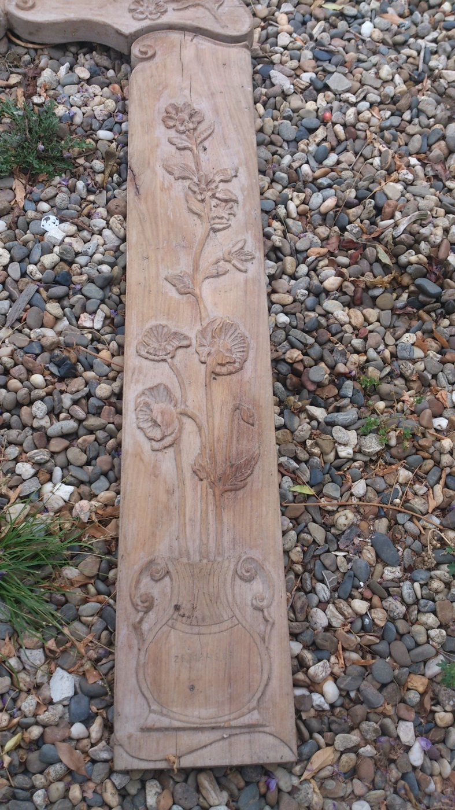
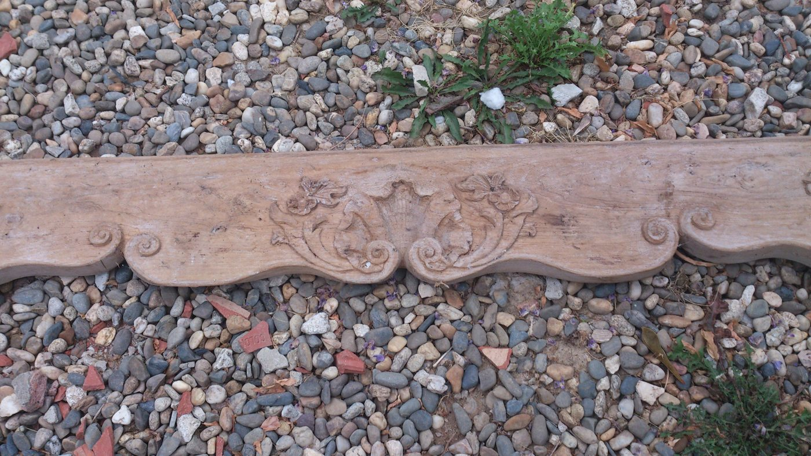

Savoir-faire
Sculpture bas-relief — création d'une console de cheminée
Pièce d'exercice — hors chantier client
Une console de cheminée entièrement sculptée à la main, réalisée pour entretenir et démontrer le geste de la sculpture bas-relief : cartouche à coquille, motifs floraux et volutes travaillés au ciseau, dans la continuité de la formation de plâtrier-staffeur. Ce même geste se retrouve dans la restauration de moulures et de rosaces d'origine présentée plus bas.

Cartouche à coquille
Motif central en bas-relief, coquille et volutes travaillées au ciseau.

Pilastre à motifs floraux
Frise florale sculptée sur toute la hauteur du pilastre.

Corniche complète
La corniche sculptée dans son ensemble, avant assemblage.
Plaque de lieu-dit
Plaque décorative sculptée à la main, motifs floraux et cartouche fleuri.